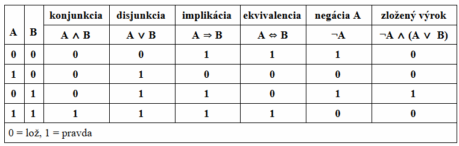
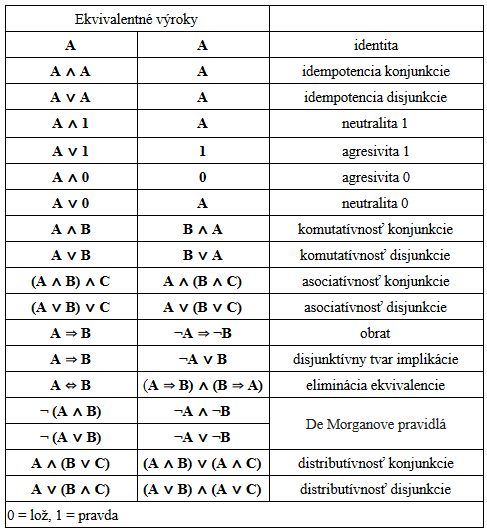

NÁSTROJE - LOGIKA
Pre UI je veľmi dôležité vedieť operovať s nadobudnutými vedomosťami. Tieto vedomosti pozostávajú z výrokov v jazyku reprezentácie znalostí. Ten má svoju syntax a sémantiku, ktorá definuje pravdivosť každého výroku v každom možnom svete. Možným svetom rozumieme matematickú abstrakciu, model, ktorý určuje pravdivosť alebo nepravdivosť každého výroku v danej situácii. Ak nejaký výrok platí v určitom modeli, hovoríme, že model mu vyhovuje. Pri riešení problému môžeme pomocou logiky nájsť model odpovedajúci nášmu cieľu. Z tohto modelu potom extrahujeme tie premenné, ktoré predstavujú akcie a sú označené ako pravdivé. Spoločne tvoria plán na dosiahnutie cieľa.
Výroková logika
Asi tou najjednoduchšou logikou je výroková logika. Rozlišujeme v nej:
- atomické výroky, pozostávajúce z 1 tvrdenia, logickej premennej, ktorá môže byť pravdivá / nepravdivá
- zložené výroky, ktoré sú zostavené z jednoduchších výrokov pomocou zátvoriek a logických spojok: konjunkcia, disjunkcia, implikácia, ekvivalencia, negácia, atď.

Tabuľka A
Logickú premennú a jej negáciu nazývame aj literály logickej premennej (pozitívny a negatívny literál). Ďalej hovoríme, že výrok je validný, ak je pravdivý vo všetkých modeloch. Tieto výroky sa nazývajú aj tautológie. Výroky, ktoré naopak nie sú pravdivé nikdy nazývame kontradikcie alebo nesplniteľné a výroky, ktoré nie sú kontradikciami nazývame splniteľné.
Niekedy sa tiež zíde výrok nahradiť nejakým ekvivalentným výrokom (viz. Tabuľka B). 
Tabuľka B
S využitím vhodných ekvivalencií je možné prepísať výrok do tzv. normálnej formy, čiže tak, aby obsahoval len spojky ∧,∨ a ¬. Napr. výrok A ⇒ (B ∨ ¬C) je logicky rovnocenný výroku ¬A ∨ B ∨ ¬C. Špeciálnymi prípadomi sú:
-
Disjunktívna normálna forma (DNF) = Výrok je v tejto forme, ak má tvar disjunkcie niekoľkých literálov / konjunkcií literálov, pričom v jednom disjunktante sa literál každej premennej nachádza najviac raz. Napr. (B ∧ C) ∨ (A ∧ B ∧ ¬C).
Úplná disjunktívna normálna forma (ÚDNF) výroku má tvar disjunkcie konjunkcií, pre ktoré platí, že obsahujú literál každej premennej výroku práve raz. Napr. (B ∨ ¬C) ⇒ (A ∧ ¬B) je logicky rovnocenné (¬A ∧ ¬B ∧ C) ∨ (A ∧ ¬B ∧ C) ∨ (A ∧ ¬B ∧ ¬C).
Previesť výrok do jeho ÚDNF môžeme jednoducho tak, že sa pozrieme na všetky hodnoty jeho premenných, pri ktorých je pravdivý. Následne z každej takejto kombinácie hodnôt vytvoríme konjunkciu a tieto konjunkcie spojíme do disjunkcie.
-
Konjunktívna normálna forma (KNF) = Výrok je v tejto forme, ak má tvar konjunkcie niekoľkých literálov / disjunkcií literálov, pričom v jednom konjunktante sa literál každej premennej nachádza najviac raz. Napr. (A ∨ C) ∧ (A ∨ B ∨ ¬C).
Úplná konjunktívna normálna forma (ÚKNF) má tvar konjunkcie disjunkcií, pre ktoré platí, že obsahujú literál každej premennej výroku práve raz. Napr. (¬A ⇒ C) ⇒ [B ∨ (¬C ⇒ A)] je logicky rovnocenné (¬A ∨ ¬B ∨ C) ∧ (A ∨ ¬B ∨ C) ∧ (A ∨ ¬B ∨ ¬C).
Previesť výrok do jeho ÚKNF môžeme tak, že sa pozrieme na všetky hodnoty jeho premenných, pri ktorých je nepravdivý. Následne z každej takejto kombinácie hodnôt vytvoríme disjunkciu, tieto disjunkcie znegujeme a spojíme do konjunkcie.
Metódy hľadania pravdivostných hodnôt výroku
Ak výrok obsahuje n logických premenných, potom existuje 2n možností ako za ne dosadiť hodnoty 0, 1. K priradeniu pravdivostnej hodnoty výroku pre každú z týchto možností sa najčastejšie využívajú 3 známe metódy:
- Asi najpriamejší spôsob ako zistiť, pravdivostné hodnoty výroku, je použiť Tabuľkovú metódu. To znamená vyplniť jeho pravdivostnú tabuľku pre všetky možné kombinácie hodnôt jeho logických premenných (viz. Tabuľka A).
-
Quineou algoritmus využíva k určovaniu pravdivostných hodnôt výroku stromovú reprezentáciu (viz. Diagram A).
Strom sa skladá z uzlov vzájomne nejako prepojených vetvami (hranami). Dokazovaný výrok predstavuje koreň, teda počiatočný uzol stromu. Z tohto koreňa vyvedieme 2 vetvy. Vyberieme si nejakú premennú výroku a v jednej z vetiev ju označíme za pravdivú (dosadíme za ňu 1), zatiaľ čo v druhej za nepravdivú (dosadíme za ňu 0). Tieto vetvy označíme príslušnými symbolmi pre literály premennej (A a ¬A). Vzniknú tak 2 nové výroky, teda 2 nové uzly stromu. Výroky zjednodušíme, ak je to možné. Následne celý proces opakujeme: z niektorého uzlu, z ktorého sme ešte nevyviedli žiadne vetvy, vyvedieme 2 vetvy k 2 novým uzlom, predstavujúcich 2 možné hodnoty nejakej premennej daného výroku. Nové výroky zjednodušíme a opakujeme.
Postupným vetvením sa vždy nakoniec dostaneme k uzlu hodnoty 0 alebo 1, bez akýchkoľvek premenných. Z takéhoto uzlu už nemožno vyviesť nové vetvy a nazývame ho listový uzol (list). Celý proces skončí, až keď nám dôjdu uzly, z ktorých by sme mohli viesť nové vetvy. Súbor listových uzlov potom predstavuje pravdivostné hodnoty, ktoré pôvodný výrok nadobúda pre jednotlivé hodnoty jeho premenných.

Diagram A